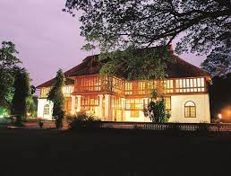

Ernakulam (also known as Cochin) is a city in southwest India's coastal Kerala state. It has been a port since 1341, when a flood carved out its harbor and opened it to Arab, Chinese and European merchants. Sites reflecting those influences include Fort Kochi, a settlement with tiled colonial bungalows and diverse houses of worship. Cantilevered Chinese fishing nets, typical of Kochi, have been in use for centuries.
Fort Kochi is a seaside town in the south-western part of Main Kochi which is known for its old-world colonial charm. The place still holds on to every single cultural change it has gone through over the centuries. We can see the remnants of British rule all over the country. The tourists' flock hear all around the year to have a glimpse of how Portuguese or Dutch colonialism affected parts of our country.

Bolgatty Palace is located in Bolgatty Island of Kochi and is one of the oldest existing Dutch palaces that is situated outside Holland. It is an exquisite example of the Kochi style of architecture. Built-in 1744 by Dutch traders, it was later extended, and gardens were landscaped around it. Green gardens, azure skies and the virgin charms of Kerela are aplenty at the Bolgatty Palace.
Overlooking the serene backwaters of Kerala is Marine Drive, one of the most popular hangout spots in the city of Kochi. It is a picturesque promenade with a walkway of about three kilometres and is a fantastic place to spend some time leisurely, either in the company of loved ones or even some alone time.